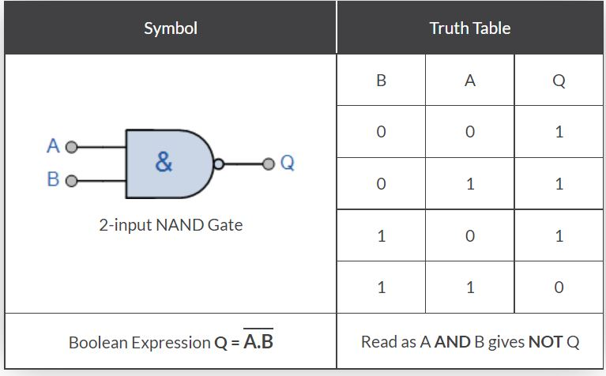
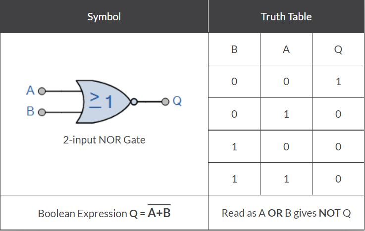

Theory
A universal gate is a logic gate which can implement any Boolean function without the need to use any other type of logic gate. The NOR gate and NAND gate are universal gates. This means that you can create any logical Boolean expression using only NOR gates or only NAND gates.
NAND gate is equal to an AND gate followed by a NOT gate.The outputs of all NAND gates are high if any of the inputs are low. The symbol is an AND gate with a small circle on the output. The small circle represents inversion.
NOR gate is equal to an OR gate followed by a NOT gate.The outputs of all NOR gates are low if any of the inputs are high.The symbol is an OR gate with a small circle on the output. The small circle represents inversion.
A stuck-at fault is a particular fault model used by fault simulators and automatic test pattern generation (ATPG) tools to mimic a manufacturing defect within an integrated circuit. Individual signals and pins are assumed to be stuck at Logical '1' or '0'. For example, an input is tied to a logical 1 state during test generation to assure that a manufacturing defect with that type of behavior can be found with a specific test pattern. Likewise the input could be tied to a logical 0 to model the behavior of a defective circuit that cannot switch its output pin. Not all faults can be analyzed using the stuck-at fault model. Compensation for static hazards, namely branching signals, can render a circuit untestable using this model. Also, redundant circuits cannot be tested using this model, since by design there is no change in any output as a result of a single fault.
Team Members: Shrinidhi Ballal Nidamboor, Aakash G. Acharya, Shilwant Roy, Ajay Vikram P, Nitin Jayadeep